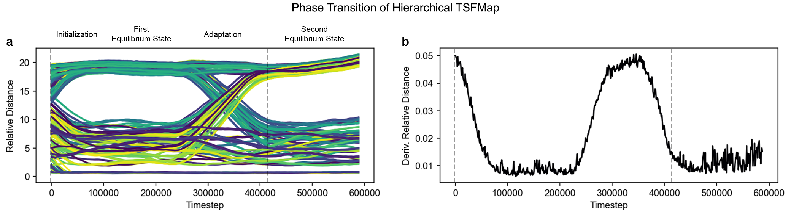
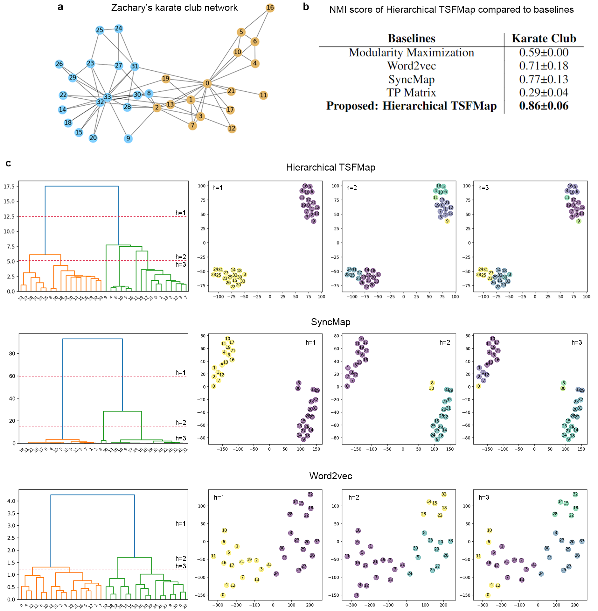

Self-Organizing Dynamical Equations
Alternative learning algorithm to backpropagation
What’s wrong with back-propagation?
Backpropagation is a gradient-based optimization method that is most widely used in training neural networks nowadays. Before touching on the drawbacks of back-propagation, we should first talk about what makes it a popular choice for training neural networks.
First of all, Backpropagation is relatively easy to implement compared to other optimization algorithms. Countless coding frameworks and libraries are available online (e.g., PyTorch, Tensorflow, you name it). it is also a widely studied and well-understood field, and there is a large body of research on how to improve its performance and efficiency. This makes it a good choice for practical applications, as there are many strategies (small and smart twerks) that have been developed to address its drawbacks and improve its performance. Lastly, back-propagation has been proven successful in a wide range of applications, from powering self-driving cars, answering your questions (ChatGPT), and winning against humans in games, among others.
With that being said, why do we still need any alternative learning algorithms to replace back-propagation? What’s wrong with it? To answer these questions, we have to understand our use case. If we want to perform the tasks listed above, sure! Backpropagation will do the jobs just right. However, if we want something more than that, let’s say, solving most real-world problems with one model or achieving Artificial General Intelligence (AGI), the gradient-based optimization methods still need to solve some challenges.
The simple reason being - it is simply not adaptive and robust enough to do so. Firstly, back-propagation is considered brittle because it is highly sensitive to changes in the input data and the network architecture. Even small changes to the input data can result in large changes in the output of the network, making it difficult to generalize to new data. Also, the models can be vulnerable to adversarial attacks, where small perturbations to the input data can cause the network to misclassify the input.
Secondly, it's not very realistic when it comes to how the brain works, since the brain doesn't appear to use error back-propagation to learn (pssst. not biologically implausible). Instead, it likely uses Hebbian learning, reinforcement learning, or other methods we have not discovered yet. Deep learning models are generally good at finding correlations in the data, but they may not provide insights into causal relationships. This can limit their usefulness in domains where causal understanding is important.
Lastly, it's not very adaptable since it needs a fixed set of data to learn from, which can't be adjusted as new data comes in. In another word, it is domain-specific, adapting these models to new tasks or domains can be challenging and may require significant expertise. In contrast, biological systems are always adapting and learning from new experiences.
What are the alternatives?
So…what are the alternatives? There are a number of alternative ways to learning other than Backpropagation. For instance, Evolutionary algorithms, Hebbian Learning, Kernel-based methods, and many more, you name it. In this post, I want to introduce one particular paradigm of learning that has recently been proposed in the lab — Self-organizing dynamical equations — a learning algorithm that focuses on the objective of being adaptive and robust.
Self-organizing dynamical equations (SODE)
What is it for?
Self-organizing dynamical equations is an algorithm that adaptively performs clustering/chunking on sequential input. In a nutshell, when inputs often activate together or back-to-back time-wise, they must be temporally correlated, therefore should be grouped together! The best part of this algorithm, however, is its **adaptability**. This means that, when the input distribution changes, SODE can re-learn and adapt to it. Currently, the paradigm contains three algorithms, SyncMap [1], Symmetrical SyncMap, and Hierarchical Temporal Spatial Feature Map (TSFMap) [2].
How does it work?
In a nutshell, SODE uses a set of dynamical equations to allow weights (weights are initialized corresponding to the inputs) to self-organize into some sort of pattern in the weight space. The weight space basically maps the temporal correlation of weights into a spatial mapping. That’s how we know what inputs are temporally related to which other inputs.
Rather than showing a bunch of crazy equations, perhaps this animation can help you better understand how SODE (SyncMap) works.
Another model that is based on SODE is called a Hierarchical TSFMap. It is designed to find Hierarchical structure and temporal correlation from sequential data that is dynamically changing its input distribution. Here are some properties and examples of Hierarchical TSFMap in action.
Adaptation comes from the fact that the proposed system, Hierarchical TSFMap, couples its internal dynamics with the input, resulting in patterns encoded as emergent attractor-repellers at equilibrium. Consequently, alterations in the underlying structure of the problem result in different equilibrium with new attractor-repellers, triggering an inherent adaptation when the problem changes. Interestingly, structural changes in the environment cause in Hierarchical TSFMap a phenomenon very similar to phase transition observed in thermodynamics, and chemistry, among other areas (Fig. 1).
 Fig.1 Phase Transition of Hierarchical TSFMapWhat has SODE achieved so far?
So far, SyncMap has successfully performed chunking on sequential data. That is, grouping together related input into separated chunks to extract pattern from time-series data.
 Fig.2 Problem description (up left), learned input-output map (upper middle) and respective learned clustering (upper right). The problem is a cyclic directed graph with node numbers as indicated. Each node number consists of a given input which is activated and inputted by a random walk over the graph (see the Section for more details). The learned input-output map is as follows: input (red line) and learned output (dash-dotted line). In direct correspondence to the learned output, it is possible to cluster the nodes with the colors shown (upper right).
Fig.2 Problem description (up left), learned input-output map (upper middle) and respective learned clustering (upper right). The problem is a cyclic directed graph with node numbers as indicated. Each node number consists of a given input which is activated and inputted by a random walk over the graph (see the Section for more details). The learned input-output map is as follows: input (red line) and learned output (dash-dotted line). In direct correspondence to the learned output, it is possible to cluster the nodes with the colors shown (upper right).
On the other hand, Hierarchical TSFMap managed to extract hierarchical structure from sequential data. What’s more impressive is, the problem distribution itself is imbalanced and dynamic (the correlation of the inputs changes during learning). Yet, the video above also showed that the model can adapt to it and achieve high accuracy, beating other baseline methods.
Last but not least, we apply Hierarchical TSFMap on some famous network datasets (Zachary's karate club network and Dolphin social network dataset). Despite being common datasets, our model managed to uncover hierarchical information (That the community can further be broken down into even smaller communities) that has yet to be widely discussed before in other literature.
 Fig.3 Extracting Hierarchical Structure from Zachary's karate club networkWhat is the future of SODE?
Of course, this still young paradigm is not yet perfect. For instance, it can only accept spiked encoded input and does not preserve memory. It will be egotistical to claim such a model is better than deep learning. However, the advantage of SODE is that it can adaptively extract any temporal-spatial correlation from data, as long as the inputs are serialized into spiked encoded input (Aka. generalization). Therefore, the model is expected to become more widely applicable to various types of datasets due to its adaptability and robustness. In short, It is a model that attempts to solve learning problems from the functional or Hopfieldian view [3] of the brain, our attempt can perhaps bring more insight into developing a better learning algorithm from a different perspective than the mainstream.